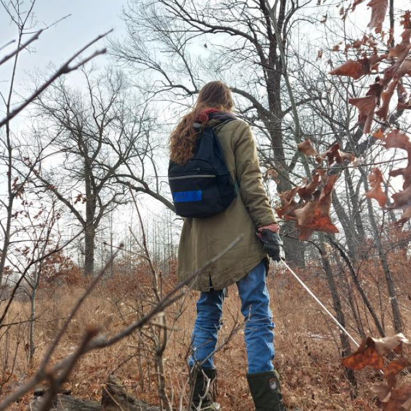
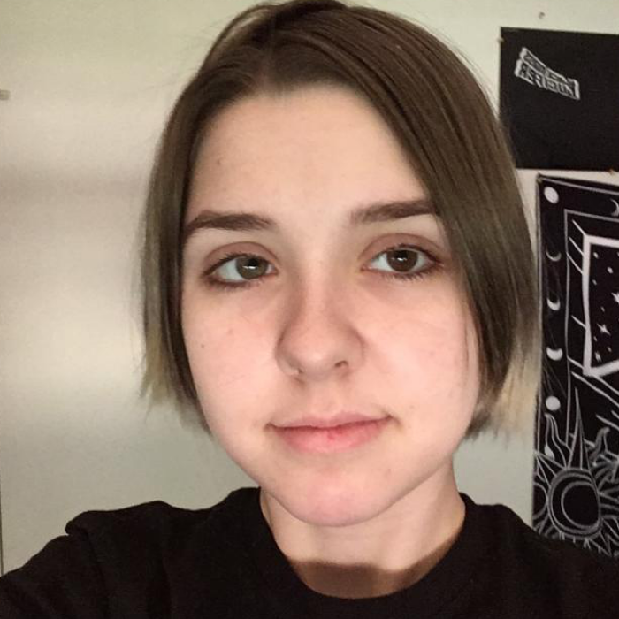

Valentine, aka Punk Girl Spit, is the creator of the web series Velkrave. She is a college student in Canada who is studying animation. The story of Velkrave is based upon a Dungeons and Dragons campaign she and her friends played in. Now that it has ended, Val has decided to use her animation talents to bring the characters to life once more, and share their story with the world.
Aly is a Web Development student, and very close to Valentine. She created this webpage for the final project of a class and is also considering turning it into an official website for the series. Aly also creates her own projects on the side. Both Val and Aly are encouraging and supportive of each other’s creative endeavors.
